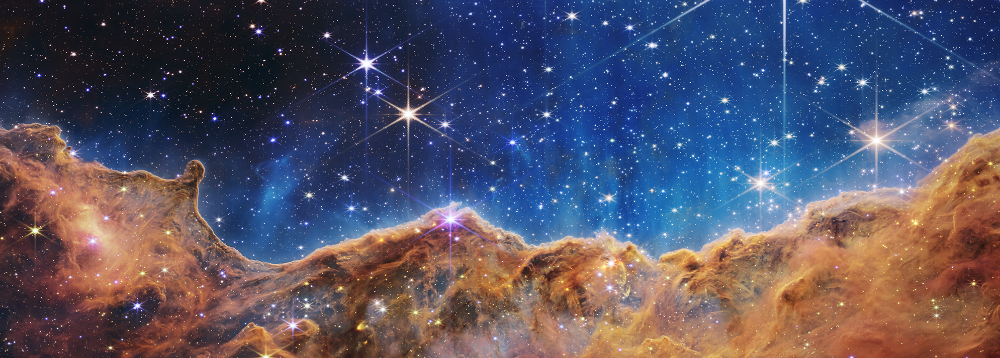
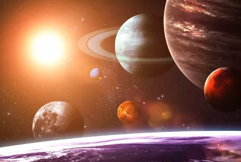
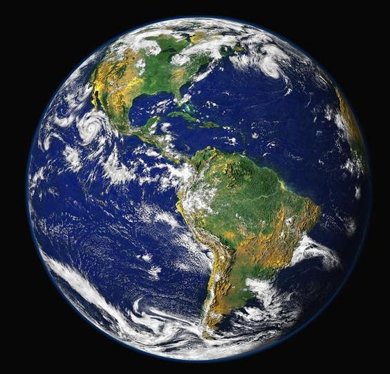
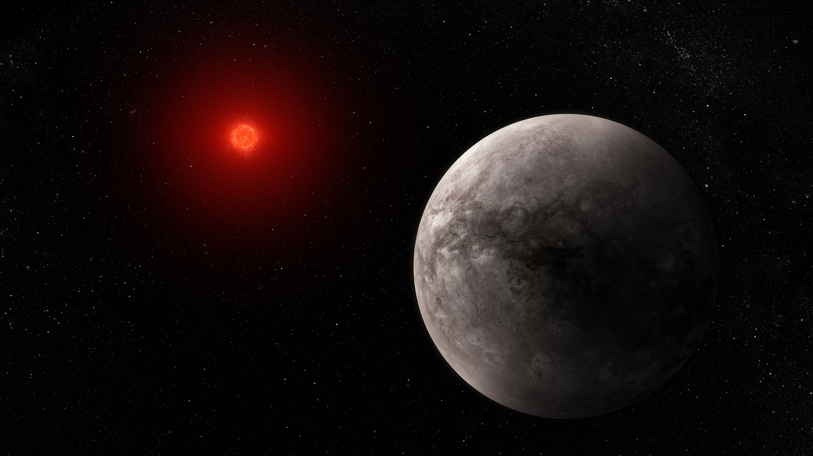

MEU PRIMEIRO WEB SITE

Planetas, estrelas e galáxias alguns dos objetos de estudo da astronomia:
A ciência astronômica investiga a estrutura do Universo e de cada um dos diferentes corpos celestes, como eles se originam e se desenvolvem, os fenômenos...

Sobre a estrutura das Galáxias:
Galáxias são sistemas ou conjuntos compostos por estrelas, gases, poeira e matéria escura. A maioria das grandes galáxias possui buracos negros no seu centro. Elas são definidas de acordo com a sua forma, podendo ser espirais, elípticas ou irregulares.

"A Star Is Born"
As estrelas, como os bebês, também têm seus “berçários”. Eles são formados por grandes nuvens ricas em gás e poeira que, quando sofrem um colapso gravitacional, dão à luz novos astros.

Nosso Satélite Natural:
A Lua é o satélite natural do planeta Terra, distanciados por aproximadamente 384.405 km. É a quinta maior das mais de 200 luas que orbitam planetas em nosso sistema solar.

Planeta Azul ou Planeta Água:
O Planeta Terra tem cerca de 70% da sua superfície coberta por água. A existência dessa substância em seu estado líquido, juntamente à presença do oxigênio e a capacidade de reciclar gás carbônico fazem da Terra um planeta com características únicas.

Exoplaneta rochoso TRAPPIST-1:
Exoplanetas são planetas que se encontram fora do nosso Sistema Solar. Por não emitirem luz própria e devido à sua grande distância da Terra, são muito difíceis de serem detectados.
Este é um site teste, desenvolvido como projeto acadêmico de um Curso de HTML/CSS, as imagens e textos foram retirados de recortes da web.